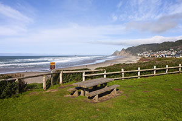

Activities
There are many activities to do at Southridge Park. We have coastal hiking trails, picnic areas, playgrounds, athletic facilities, and more activities than you can think of. Come and join us for yoga on the beach, or let one of our rangers take you on a nature walk. Our sheltered picnic areas are great for parties and get-togethers. If you would like to reserve a picnic shelter, click here.
Athletic Facilities
Southridge Park offers a variety of free athletic venues. We offer two grass fields equipped to play soccer, lacrosse, or field hockey. We also provide a tennis court, basketball court, and a pool with an on-duty lifeguard. Pool only open during summer and costs $15.00 per day. All fields and courts are first-come-first-serve, equipment not included.